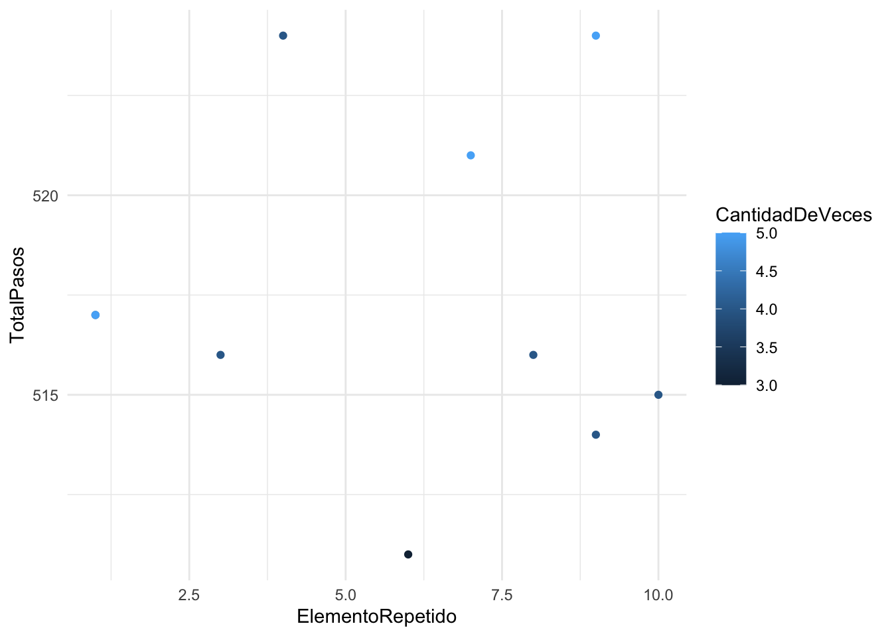

6 Visualizacion de Datos con ggplot2
Cargamos los datos Datos_Enoc.csv, que contienen información sobre pasos realizados, elementos repetidos y la cantidad de veces que estos se repiten. Utilizamos la función read.csv() para leer los datos desde un archivo CSV.
## TotalPasos ElementoRepetido CantidadDeVeces
## 1 515 10 4
## 2 516 3 4
## 3 511 6 3
## 4 514 9 4
## 5 517 1 4
## 6 521 7 5
## 7 524 9 5
## 8 524 4 4
## 9 516 8 4
## 10 517 1 5Para empezar, cargamos la librería ggplot2, que nos permitirá realizar gráficos de alta calidad.
Luego, creamos un gráfico de dispersión utilizando las variables ElementoRepetido y TotalPasos, con el tamaño de los puntos determinado por la variable CantidadDeVeces.
ggplot(datos, aes(ElementoRepetido, TotalPasos)): Creamos un objeto gráfico base con los datos, donde asignamos el eje X a la variable ElementoRepetido y el eje Y a TotalPasos. Esto especifica las coordenadas para cada punto en el gráfico.
geom_point(aes(size = CantidadDeVeces)): Añadimos los puntos al gráfico, y usamos el tamaño de los puntos (parámetro size) para representar CantidadDeVeces. Cuanto mayor es el valor de CantidadDeVeces, más grande será el punto en el gráfico.
Luego, se puede visualizar el mismo gráfico, pero ahora agregando color a los puntos basado en la variable CantidadDeVeces para hacer la visualización más intuitiva.
## 'data.frame': 10 obs. of 3 variables:
## $ TotalPasos : int 515 516 511 514 517 521 524 524 516 517
## $ ElementoRepetido: int 10 3 6 9 1 7 9 4 8 1
## $ CantidadDeVeces : int 4 4 3 4 4 5 5 4 4 5ggplot(datos, aes(ElementoRepetido, TotalPasos)) +
geom_point(aes(color = CantidadDeVeces)) +
theme_minimal() * geom_point(aes(color = CantidadDeVeces)): En lugar de cambiar el tamaño de los puntos, ahora usamos el parámetro color para que los puntos cambien de color según el valor de CantidadDeVeces.
- theme_minimal(): Aplica un tema visual limpio y simple al gráfico, eliminando elementos innecesarios para centrar la atención en los datos.
Para mejorar la interpretación de las variables categóricas, transformamos ElementoRepetido y CantidadDeVeces en factores.
Aquí usamos factor() para convertir ElementoRepetido en una variable categórica (factor). Luego verificamos la estructura de los datos con str() para asegurarnos de que el cambio se realizó correctamente.
## 'data.frame': 10 obs. of 3 variables:
## $ TotalPasos : int 515 516 511 514 517 521 524 524 516 517
## $ ElementoRepetido: Factor w/ 8 levels "1","3","4","6",..: 8 2 4 7 1 5 7 3 6 1
## $ CantidadDeVeces : int 4 4 3 4 4 5 5 4 4 5ggplot(datos, aes(x = ElementoRepetido, y = TotalPasos)) +
geom_bar(stat="identity", position=position_dodge(),aes(fill = CantidadDeVeces)) +
theme_minimal()Creamos un gráfico de barras para visualizar los TotalPasos según el ElementoRepetido, con barras coloreadas según CantidadDeVeces. * geom_bar(stat = “identity”): Crea un gráfico de barras donde la altura de las barras corresponde a los valores de TotalPasos.
aes(fill = CantidadDeVeces): Coloreamos las barras según el valor de CantidadDeVeces para representar la frecuencia de cada categoría.
position_dodge(): Alinea las barras una al lado de la otra en lugar de superponerlas, facilitando la comparación entre categorías.
Finalmente, creamos un gráfico de dispersión con colores y ajustamos etiquetas para hacerlo más informativo.
datos$CantidadDeVeces <- factor(datos$CantidadDeVeces)
datos$ElementoRepetido <- factor(datos$ElementoRepetido)
ggplot(datos, aes(x= ElementoRepetido, y = TotalPasos)) +
geom_point(aes(color = CantidadDeVeces)) +
theme_minimal() +
labs(title = "Tiempo de ejecución por dato más frecuente", y = "Total de pasos", x = "Moda o dato más frecuente", label = "N° de repeticiones") +
scale_color_discrete(name="N° Repeticiones")labs(): Añade etiquetas y títulos al gráfico:
- title: Título del gráfico.
- y: Etiqueta del eje Y, indicando “Total de pasos”.
- x: Etiqueta del eje X, indicando “Moda o dato más frecuente”.
scale_color_discrete(name = “N° Repeticiones”): Cambia la leyenda del gráfico para que el título de la leyenda sea “N° Repeticiones”.
Este gráfico final muestra de manera clara cómo el ElementoRepetido afecta el TotalPasos, y usa el color para representar la cantidad de veces que cada elemento aparece.